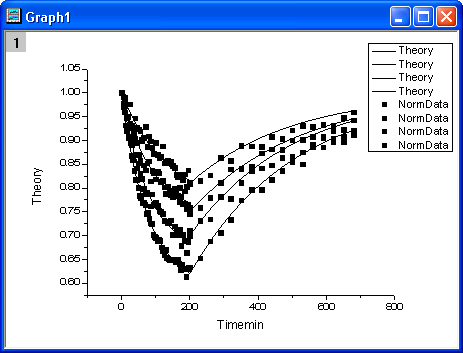

Zeigen Sie alle drei Bedienfelder des Dialogs Diagrammeinstellungen an (wenn sie nicht bereits alle angezeigt werden), indem Sie auf die Schaltflächen
Zuerst werden 4 Liniendiagramme mit Hilfe des Dialogs Details Zeichnung zu der Grafik hinzugefügt. Markieren Sie alle Datensätze im oberen Bedienfeld und setzen Sie dann im mittleren Bedienfeld die Spalte Timemin als X und die Spalte Theory als Y. Fügen Sie sie dem unteren Bedienfeld hinzu.
Als nächstes werden 4 Punktdiagramme zu der gleichen Grafik hinzugefügt. Wählen Sie Punktdiagramm in der Auswahlliste Diagrammtyp, stellen Sie sicher, dass alle Datensätze im oberen Bedienfeld ausgewählt wurden, und weisen Sie im mittleren Bedienfeld Spalte Timemin X zu und Spalte NormData Y. Fügen Sie sie dem unteren Bedienfeld hinzu.
|
Um alle drei Bedienfelder im Dialog Diagrammeinstellungen anzuzeigen, erweitern Sie bitte das Bedienfeld Diagrammtyp, indem Sie auf Bitte lesen Sie unter Mit Hilfe des Dialogs Diagrammeinstellungen zeichnen weitere Informationen zu diesem Thema. |
Gibt es im unteren Bedienfeld einen Zweig Gruppe unter Layer1, klicken Sie mit der rechten Maustaste darauf und wählen Sie im Kontextmenü Gruppe auflösen, um die Gruppierung dieser Zeichnungen aufzulösen.
Klicken Sie auf OK, um das Diagramm zu erzeugen, das wie folgendes aussehen sollte.

Auf der Registerkarte Gruppe werden Sie die Symbole hauptsächlich in dem Listenfeld in der Mitte der Registerkarte benutzerdefiniert anpassen. Wählen Sie in der Zeile Symboltyp die Option Nach Eins in der Spalte Inkrement. Klicken Sie auf die Schaltfläche , um den Dialog Inkrementeditor zu öffnen. In dem Dialog wählen Sie Dreieck nach oben, Kreis,Hexagon und Quadrat für die ersten vier Zeilen.
Wählen Sie in der Zeile Symbolrandfarbe die Option Nach Eins in der Spalte Inkrement. Klicken Sie in der Spalte Details auf die Farbliste, um die Liste Q11: Candy aus der Auswahlliste Farbe auszuwählen.
Wählen Sie in der Zeile Symbolinneres die Option Nach Eins in der Spalte Inkrement. Klicken Sie auf die Schaltfläche , um den Dialog Inkrementeditor zu öffnen. In dem Dialog wählen Sie Durchgezogen, Durchgezogen,Halb links und Durchgezogen für die ersten vier Zeilen. Klicken Sie auf OK, um den Dialog Details Zeichnung zu schließen. Das Diagramm sollte dann folgendermaßen aussehen:
Passen Sie zuerst die Achsenskalierung an. Gehen Sie zu dem Symbol Horizontal auf der Registerkarte Skalierung und setzen Sie Von auf -5 und Bis auf 690; setzen Sie die Großen Hilfsstriche auf Nach Inkrement und den Wert auf 100. Wiederholen Sie diese Schritte, um den Bereich der Y-Achse benutzerdefiniert anzupassen (das Symbol Vertikal), mit den Werten 0,61 für Von und 1,01 für Bis sowie 0,05 für Wert.
Um die Achsenhilfsstriche anzupassen, wählen Sie das Symbol Oben auf der Registerkarte Linie und Hilfsstriche und aktivieren Sie das Kontrollkästchen Zeigen. Gehen Sie dann zum Symbol Oben auf der Registerkarte Linie und Hilfsstriche und wählen Sie in der jeweiligen Auswahlliste die Option Innen für sowohl Große Hilfsstriche als auch Kleine Hilfsstriche. Wiederholen Sie die gleichen Schritte für die rechte Achse bei aktivem Symbol Rechts.

Klicken Sie auf OK, um diesen Dialog zu schließen. Die Legende wird aktualisiert. Klicken Sie doppelt auf sie, um den Modus der direkten Bearbeitung zu aktivieren. Entfernen Sie die ersten vier Zeilen.
Das endgültige Diagramm sollte dann folgendermaßen aussehen: